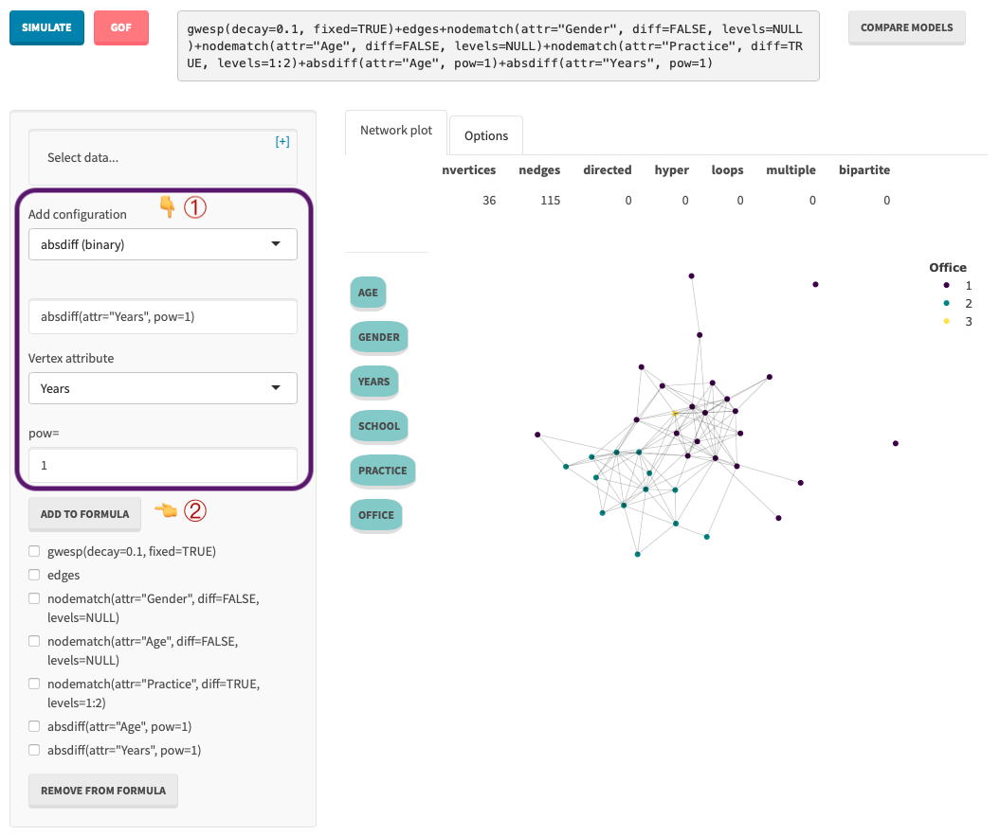

Tutorial: How to model Lazega network using Bergm package and its web interface.
Network science aims to quantify the processes responsible for creating connections (links) between nodes (actors, vertices) of the network. The network is a relational structure with nodes representing computers, people, proteins, etc., connected by links symbolising connections, friendships or interactions between them.
Interactive plot of a simple network with four actors and the friendship relationships between them.
Thanks to the recent development of more computationally efficient estimation methods with better convergence, Exponential Random Graphs are gaining popularity among statisticians. Many complex relationships can be modelled and analysed due to a multitude of sufficient statistics (and network sub configurations). Many of them model exogenous properties of the vertices, which do not depend on the structure of the graph. Such covariates might be gender, race, citizenship etc. Endogenous properties specify how the connections between the vertices influence the rest of the graph. Endogenous properties are edge-wise shared partners, k-stars etc.
The essence of the ERGMs is to find estimates of the parameters \(\boldsymbol\theta\) of the model:
\[ p(y \mid \boldsymbol\theta) = \frac{\exp\left( \sum_{i=1}^d\theta_i g_i(x) \right)}{z(\boldsymbol\theta)} \]
The likelihood normalising constant \(z(\boldsymbol\theta) = \sum\limits_{y \in \mathcal{Y}} \exp\left( \sum_{i=1}^d\theta_i g_i(x) \right)\) depends on the values of the parameter vector \(\boldsymbol\theta \in \mathbb{R}^d\) and is summed over all possible network configurations with \(2^{\binom{n}{2}}\) combinations of edges and links in the undirected network.
The first significant steps to develop methods to estimate parameters of such models were MPLE (Maximum Pseudo-Likelihood) (Strauss and Ikeda 1990) and MCMLE methods (Geyer and Thompson 1992). MPLE proved to be biased and lead to underestimated variance. The next breakthrough was possible thanks to the increased computational power of personal computers leading to the popularisation of Bayesian statistics, primarily through the Markow Chain Monte Carlo simulations. The exchange algorithm was developed (Murray, Ghahramani, and MacKay 2006). It dealt with the double-intractability of the posterior distributions by introducing the auxiliary variable \(y'\), i.e.the sample of the network, similar to the observed one, which is sampled from the MCMC chain and is either accepted or rejected based on the acceptance probability defined by the Metropolis-Hastings algorithm. Caimo and Friel (2014) improved that algorithm by replacing the exact sample \(y'\) with an approximate value based on the samples from the auxiliary chain of samples. This method proved to be state-of-the-art. Bouranis, Friel, and Maire (2017) observed that the distribution of samples drawn from very long chains (thinned to reduce autocorrelation) can be approximated by the pseudo-likelihood method with its density translated and the curvature at the mode transformed. The authors showed that this method is both fast and accurate.
The latter two methods, i.e.Approximate Exchange Algorithm with Adaptive Sampling and the modified pseudo-likelihood method, are included in the Bergm package.
One of the number of network datasets used for illustrative purposes is the lazega dataset (Lazega and others 2001). In this undirected network, nodes represent attorneys, and links represent their collaborative relations. Each node has assigned attributes such as Practice, Office, Gender, Age, Years and School.
Lazega network
This tutorial will build the model for this dataset using different exogenous and endogenous statistics and configurations. Then, we will trim some of the superfluous terms to obtain the parsimonious model and check its performance by running the goodness-of-fit test.
Bergm package is based on the ergm package, a building block of the statnet project. It is the researchers responsibility to choose the relevant terms (help(ergm-terms)) that reflect the networks structure in the best possible way and then analyse the estimated parameters to get insights into processes that took place in creating the observed network.
The Bergm package requires the R environment, and it uses script R scripting language. However, the interactive Shiny web application has been created (https://mrppdex.shinyapps.io/bergm-shiny/). Its goal is to facilitate experimentation with networks through the pipeline, which entails model creation, comparison and goodness-of-fit to check the adequacy of the model.
The description above the plot of the networks contains information such as the number of nodes, number of links and whether the network is directed or undirected.
In this tutorial, we will use the evidence function from the Bergm package. The shiny (Chang et al. 2020) interface allows the practitioner to choose between the evidence function, which is fast and produces less autocorrelated samples and the bergm function, which has good accuracy and convergence but requires many more iterations of the MCMC algorithm in order to get quality samples. In order to choose which function should be used in the estimation process, go to the Options tab and choose the evidence function from the dropdown menu with the label Simulate using:.
In the first attempt, we will choose the following ergm terms in our model:
| terms | description |
|---|---|
| gwesp(decay=0.1, fixed=TRUE) | Geometrically weighted edgewise shared partner distribution: This term is just like gwdsp except it adds a statistic equal to the geometrically weighted edgewise (not dyadwise) shared partner distribution with decay parameter decay parameter, which should be non-negative. The value supplied for this parameter may be fixed (if fixed=TRUE), or it may be used instead as the starting value for the estimation of decay in a curved exponential family model (when fixed=FALSE, the default) (see Hunter and Handcock, 2006). This term can be used with directed and undirected networks. For directed networks the geometric weighting is over homogeneous shared partners only (i.e., only partners on a directed two-path connecting the nodes in the edge and in the same direction). |
| edges | This term adds one network statistic equal to the number of edges (i.e.nonzero values) in the network |
| nodematch(attr=Gender, diff=FALSE) | Uniform homophily and differential homophily: The attrname argument is a character vector giving one or more names of attributes in the networks vertex attribute list. When diff=FALSE, this term adds one network statistic to the model, which counts the number of edges (i,j) for which attrname(i)==attrname(j). (When multiple names are given, the statistic counts only those on which all the named attributes match.) When diff=TRUE, p network statistics are added to the model, where p is the number of unique values of the attrname attribute. The kth such statistic counts the number of edges (i,j) for which attrname(i) == attrname(j) == value(k), where value(k) is the kth smallest unique value of the attrname attribute. If set to non-NULL, the optional keep argument should be a vector of integers giving the values of k that should be considered for matches; other values are ignored (this works for both diff=FALSE and diff=TRUE). For instance, to add two statistics, counting the matches for just the 2nd and 4th categories, use nodematch with diff=TRUE and keep=c(2,4) |
| nodematch(attr=Age, diff=FALSE) | as above |
| nodematch(attr=Practice, diff=TRUE) | as above |
| nodematch(attr=Office, diff=TRUE, levels=1:2) | as above |
| absdiff(attr=Age, pow=1) | Absolute difference: The attrname argument is a character string giving the name of a quantitative attribute in the networks vertex attribute list. This term adds one network statistic to the model equaling the sum of abs(attrname[i]-attrname[j])^pow for all edges (i,j) in the network. |
| absdiff(attr=Years) | as above |
First, (1) we choose the term and pass its arguments and then (2) we add the selected term to the formula.
 Once the estimation is complete, the summary screen is activated.
The optimal acceptance ratio of the Metropolis-Hastings algorithm should be between 0.2 and 0.3. In this example, however, the acceptance ratio is too low with the value of 0.07, and it can result in poor mixing of the samples. The easiest way to adjust it is to either increase or decrease the V.proposal parameter of the evidence function. It can be adjusted in the options tab. Empirically, the optimal value for the V.proposal argument turns out to be around 0.9. Once the estimation is invoked once again, the acceptance rate is improved with the value of 0.24.
The inspection of the Plots tab shows that the parameters chains have autocorrelation close to 0 for lags around 60 and the distributions of samples are unimodal.
The number of sufficient statistics in the ergm term might be excessive, and some of them may not play a vital role in creating the observed network. The evidence function uses either Chib and Jeliazkovs (CJ) or Power posterior (PP) methods to estimate the marginal likelihoods. The web application allows checking the evidence with and without selected terms. To select the terms, the user has to click them in the grey box with the formula on the top of the screen. If the term is selected, it will change its colour.
Once the terms are selected, we can compare the models with and without them by pressing the COMPARE MODELS button. After the estimation is finished, the Model comparison tab is activated, and the results can be sorted by the value of the log.evidence.
In this example, we can see that the value of the log evidence of our model is equal to -308.9502. Removal of the absdiff(attr="Age", pow=1) improves the model the most. That may indicate that the model without this term might be better. The removal of the edges term significantly lowers the log-likelihood. That means that this term plays a significant role in our model. Because the values of the parameters might be correlated, a good practice is to remove only the worst-performing term and rerun the model comparison. Now, the removal of any of the terms is negatively influencing the models log-evidence.
Further improvement of the model is impossible, and we can press the Estimate button again to estimate the parsimonious models parameters. Once the estimation is complete, the next step is to perform the goodness-of-fit test. It can be accomplished by pressing the GOF button.
NOTE: Model comparison does not update the latest model. Estimations have to be performed before the godness-of-fit tests.
Another approach is to use expert knowledge. In this trivial example, one can assume that working in the same practice influences the connectivity pattern. We can use Practice as the exogenous predictor and gwesp as the endogenous. Even though it has slightly lower log evidence (-298.5582), this model performs better in the goodness-of-fit tests.
test of the formula